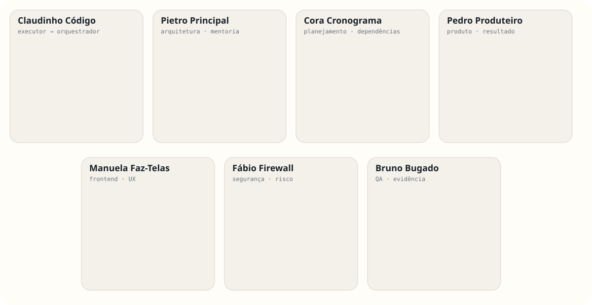

Agentic Engineering Workshop
De Principal Engineer a
Orquestrador de Agentes
Não é sobre escrever prompts melhores. É sobre organizar trabalho melhor.
Não é sobre escrever prompts melhores. É sobre organizar trabalho melhor.
Antes de escrever uma linha de código, já existem perguntas de produto, domínio, arquitetura e qualidade.
Quem cria? Para quê? Qual jornada?
Quais dados? Regras? Estados?
Onde entra? O que já existe?
Como sabemos que está correto?
Princípios, valores, trade-offs e limites que continuam válidos quando a tarefa muda.
Padrões e regras que reduzem decisões repetitivas sem esconder o contexto.
Convenção · padrão · regra · restrição
Objetivo · conhecimento genérico · missão
Conhecimento → procedimento reutilizável → execução.
Uma skill boa evita que cada agente reinvente o caminho para uma atividade recorrente.
O que existe? Por que fazer? Quem é afetado? Quais restrições?
Contexto + Objetivo + Restrições + Critérios de aceite.
Uma missão define o resultado esperado sem precisar ditar cada tecla.
Não. O sistema precisa lembrar por nós.
Uma infraestrutura para organizar e disponibilizar conhecimento aos agentes.
Exemplo, não protagonista. O conceito é maior que a ferramenta.
MCP conecta o agente às fontes e ferramentas que ele precisa usar.
O ambiente onde o agente consegue observar, agir e verificar.
Código · GitHub · arquivos · configuração
Testes · APIs · logs · pipeline · issues
Sem verificação, “terminou” é apenas uma opinião.
Responsabilidade antes de personalidade.
Cora cuida do plano. Pedro conecta necessidade a resultado. Manuela transforma experiência em interface.
Os personagens representam responsabilidades, não mascotes.

Objetivo → Resultados → Responsabilidades → Dependências → Missões → Evidências
Delegar não é distribuir tarefas. É distribuir contexto, responsabilidade e critérios de sucesso.
Paralelizar cedo demais também cria retrabalho.
“Contrato pronto.”
“Tenho uma restrição.”
“Encontrei um caso não coberto.”
“Funciona, mas a decisão arquitetural precisa mudar.”
O humano não precisa observar cada tecla. Precisa conseguir julgar o resultado.
A tarefa não mudou.
Definir. Arquitetar. Priorizar. Revisar. Integrar.